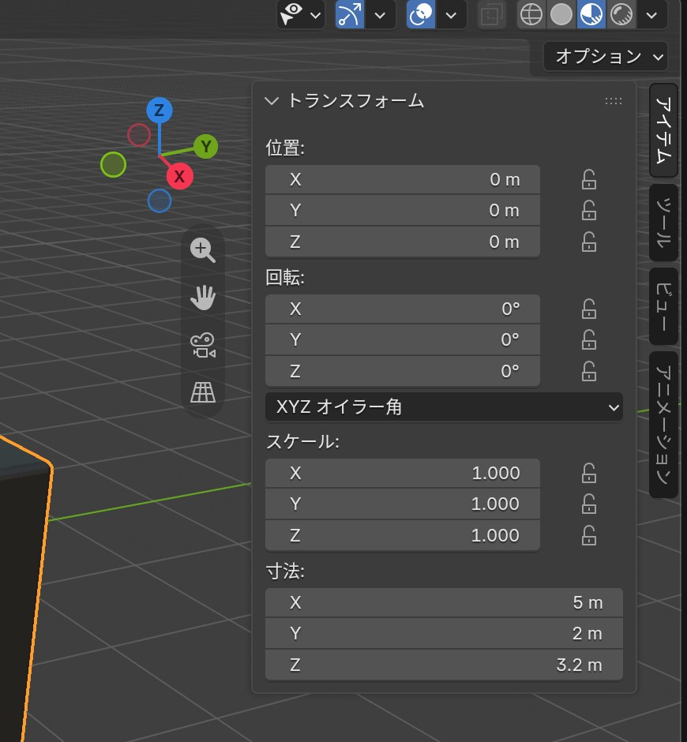
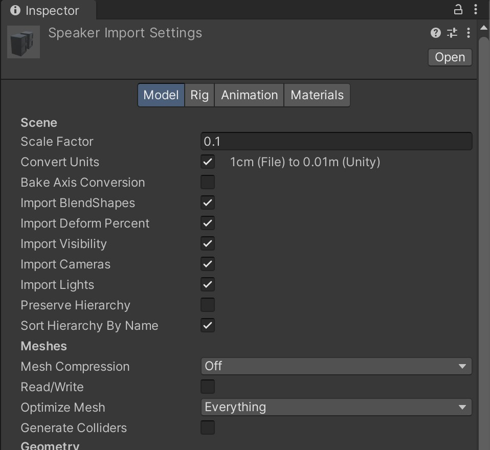
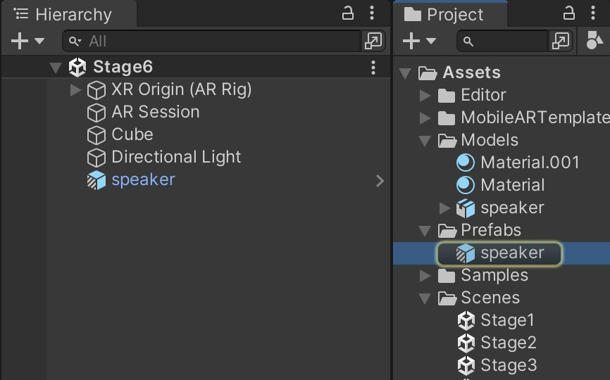
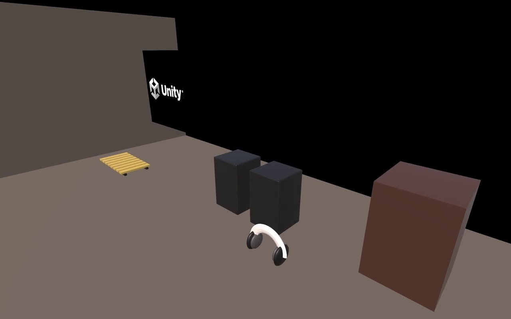

今日の流れ
宿題で作ったモデルを、Unity に持っていく
第8回
モディファイア・色ミラー・配列・マテリアル済第9回
Unity へFBX で書き出して取り込む。大きさ・色・Prefab・AR第10回
AR に置くタップで鳴る。総合制作の最小ライン
最小ライン宿題のモデルを
FBX で書き出す.blend → .fbx（メッシュだけ ＋ トランスフォームを適用）
→
今日のゴール ＝ 課題Blender で作成したモデルを
AR で出力するModels フォルダ → 大きさ → 色 → 置く → Prefab → AR
スマホを使わない人は ▶ Play で OK
宿題のモデルが無い人は 作例で OK
AR の画面のスクショ ＋ .fbx を提出
→
できた人から音を付ける（立体音響）
指で動かす・大きさを変えるほかのモデルも入れる・金属にする
スライドの画面は、例のスピーカー（speaker）。自分のモデルの名前に読みかえる。キー表記は Mac（Windows は Cmd → Ctrl）。Unity は時間がかかるので、先に起動しておく
今日の終わりにこうなる
自分のモデルが、AR で出る
動画（25 秒）：例のスピーカーを AR で出したところ。Mac では仮想の部屋（XR Simulation）、スマホでは現実の部屋に出る。横にあるのは配布の作例
リファレンス
坂本龍一 & Tin Drum《KAGAMI+》（2026）
坂本龍一のピアノ演奏を 3D で記録し、現実の空間によみがえらせる MR（複合現実）作品。透過型のヘッドセットで見る。2026 年 6〜10 月に大阪で日本初上演（世界初演は 2023 年・ニューヨーク）
現実の空間に、3D のモデルと音を置く ＝ 今日やることと同じしくみ
リファレンス
Google Creative Lab「Sounds in Space」（2020）
場所に音を置いて、歩くと聞こえ方が変わる AR の実験。スマホで音を置く場所を決める。Unity ＋ ARCore で作られている
音に「場所」を付ける ＝ 今日の立体音響と同じしくみ
リファレンス
Gorillaz「Skinny Ape」AR ライブ（2022）
3DCG のバンドメンバーが巨大な姿で街に現れて、新曲を演奏する AR ライブ。ニューヨークとロンドンの広場で、スマホのアプリ越しに見る
3DCG ＋ 音 ＋ AR ＝ この授業で作るものと同じ組み合わせ
① しくみ
Blender から FBX で書き出して、Unity に入れる
FBX（.fbx）＝ 3D モデルを、ほかのソフトに渡すためのファイル。形や色は持っていけるが、持っていけないものもある
Blender（宿題の .blend）形・モディファイア・色
→
.fbx（例：speaker.fbx）ファイル → エクスポート → FBX
.blend と同じフォルダにできる
→
Unity（Assets/Models）Models フォルダにドラッグ
大きさ・色を整えて Prefab に
| Blender で作ったもの | | Unity に入れると |
|---|
| 形・大きさ | ○ | 1 ＝ 1 m のまま |
| ミラー・配列・サブディビジョン | ○ | 自動で適用される |
| 色・つや | ○ | そのまま入る |
| メタリック | × | Unity で Metallic を 1 に |
| カメラ・ライト | 入れない | 書き出すときに「メッシュ」だけにする |
② 大きさ
モデルを、本物の大きさに合わせる
単位は同じ（Blender の 1 m ＝ Unity の 1）。大きく作ったモデルは大きいまま入る（例のスピーカーは幅 5 m）→ 本物の大きさ（50 cm）にする
1
Blender：N → アイテム → 寸法 で、今の大きさを見る例：幅 5 m
2
本物の大きさ ÷ 今の大きさ を計算する例：0.5 m ÷ 5 m ＝ 0.1
3
Unity：.fbx をクリック → Model タブ → Scale Factor に入れる → Apply例：0.1
本物の大きさは、自分で決めてよい（調べる・実物を測る）。AR は現実の部屋に出るので、大きさが合うと本物らしく見える

例：Blender の寸法（幅 5 m）

Scale Factor 0.1 → 下の Apply
③ Prefab にして、Play
Prefabs フォルダにドラッグ → Original Prefab → ▶ Play
なぜ Prefab にする？ 付けた部品や設定ごと保存した「ひな形」になる → 同じモノを何個でも、ほかのシーンにも出せる。第10回はこの Prefab を AR に置いて、タップで鳴らす
1
Project の Assets を右クリック → Create → Folder →「Prefabs」
2
Hierarchy の自分のモデルを Prefabs フォルダにドラッグきかれたら「Original Prefab」
3
Hierarchy の名前が青くなれば OK → Cmd ＋ S青い名前 ＝ Prefab とつながっている印
4
▶ Play → 仮想の部屋（XR Simulation）で、自分のモデルを見る第5回と同じ。W／A／S／D と右ドラッグで歩く

Prefabs に speaker
青くなる

▶ Play：仮想の部屋に、例のスピーカー（50 cm）
できた人から：音を付ける
モデルに音を付けて、立体音響にする
立体音響 ＝ 音に「場所」ができる。モデルに近づくと大きく、離れると消える。右にあれば右から聞こえる
1
音のファイルを用意する（.wav・.mp3）第5回の Audio フォルダ。game2_c は Assets/sound
2
自分のモデルを選ぶ → Add Component → Audio Source
4
Play On Awake ✓ ／ Loop ✓
5
Spatial Blend → 右端（3D）これで立体音響になる
6
Linear Rolloff ／ Min Distance 1 ／ Max Distance 21 m まではそのまま、2 m より遠くは聞こえない
7
Cmd ＋ S → ▶ Play → 近づく・離れるイヤホンで聞く。スマホは、もう一度書き出す
Audio Source の設定（数字は左の手順）。第5回と同じ値
今日のまとめ
第9回のまとめ
- ① 宿題のモデルを FBX で書き出す：メッシュ だけ ＋ トランスフォームを適用
- ② 大きさは Scale Factor（本物の大きさ ÷ 今の大きさ）、色は Extract Materials…
- ③ Hierarchy に置く → Prefab（ひな形として保存）
- ④ 自分のモデルを AR で出力する
- できた人から：音を付ける（Audio Source）／指で動かす（XR Grab Interactable ＋ AR Transformer）
- 課題：AR の画面のスクショ ＋ .fbx を提出
次回：第10回 自作モデルを AR に置いて、タップで鳴らす。今日のプロジェクト・.fbx・.blend は消さない。
付録
Blender → Unity 早見表
Blender：FBX で書き出す
1
ファイル → エクスポート → FBX (.fbx)
できた人から
＋
音を付ける：Audio Source → Spatial Blend 3D
＋
指で動かす：XR Grab Interactable ＋ AR Transformer
Unity：取り込む
2
Model タブ → Scale Factor → ApplyScale Factor ＝ 本物の大きさ ÷ 今の大きさ
3
Materials タブ → Extract Materials…
4
Hierarchy にドラッグ → Position (0, 0, 1)
5
Prefabs フォルダにドラッグ → Original Prefab
6
AR で出力：スマホに書き出す（使わない人は ▶ Play）
くわしい早見表（PDF・A4 1 枚）と作例の .fbx は、授業ページの配布資料から